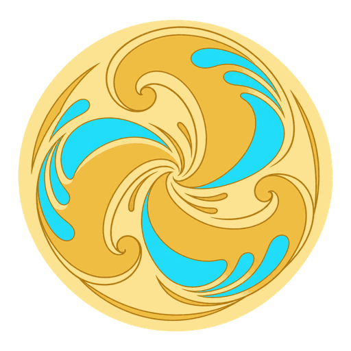

Coin Cascade — contrôle ART-001
Texture exportée à 45 et 60 px CSS, rotations multiples. Sans éclairage du moteur 3D.

45 px / 0°
45 px / 60°
45 px / 120°
45 px / 180°
45 px / 240°
45 px / 300°
60 px / 0°
60 px / 60°
60 px / 120°
60 px / 180°
60 px / 240°
60 px / 300°